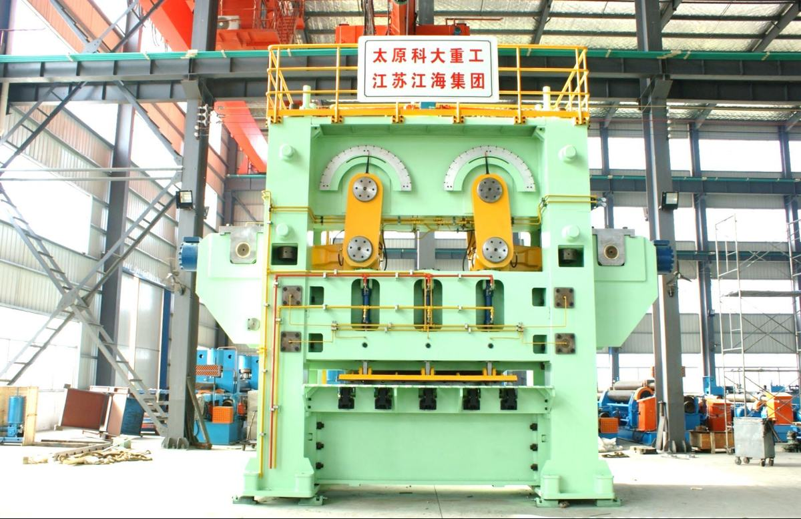
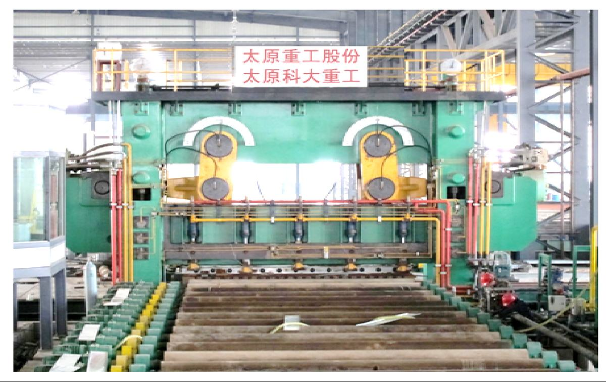
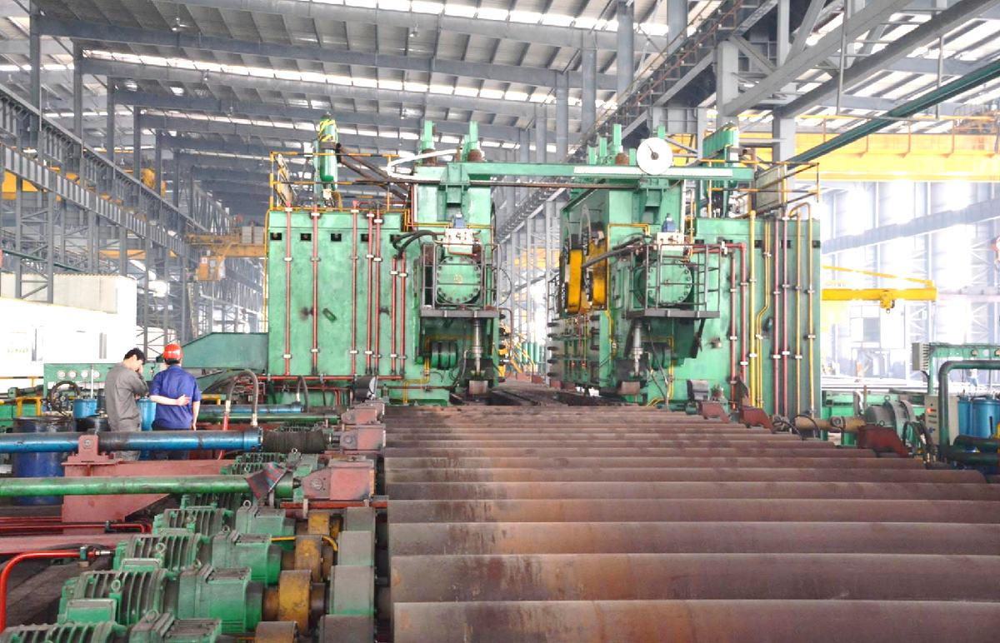

大型钢板滚动式剪切机是生产高附加板材急需的重大技术装备，主要用于完成板材的定尺、分段、切头尾、取样等工作。机械式滚动剪切技术长期被德国西马克和日本三菱等国外公司垄断，国内的沈重、二重等公司通过购买专利使用权和代加工形式生产“双轴双偏心的滚切剪机”，价格昂贵。机械式滚切剪剪切角度和开口度装配后不可调整，无法实现产品全尺寸规格纯滚动剪切，尤其在取样和热态金属分段剪切时，由于厚度、强度及金属延伸系数范围波动大，轨迹无法自适应调整，导致剪切断口质量变差，无法满足生产要求，严重制约着钢铁企业产品质量提升。
为解决上述技术瓶颈，打破国外企业技术垄断，太原科技大学与东北大学等单位合作，提出一种卧式液压缸驱动复合连杆机构的金属板滚动剪切新方法，经过十余年的艰苦探索，发明出大型液压滚动式宽厚板剪切技术与装备。
发明新型剪切机构，可通过控制双侧卧式液压缸运动时序与速度调整机构滚动运行轨迹，解决剪切机构不能随钢板规格变化进行相应调整导致剪切质量缺陷的国际性难题。建立求解以上刀盘为原动件，滚动剪切运动为限定条件的伺服液压缸位移和速度的机构逆向求解多参函数，同时发明多伺服液压缸协同运动电液控制系统，实现了新型剪切机构在重载荷、大行程及强冲击工况下多个伺服缸协调运动完成滚动剪切的精确控制。同时发明具有径向偏载力主动抑制功能的伺服液压缸与机架卧式铰接增力新结构及其设计方法，可使剪切能力放大约为液压缸推力的2.7倍，解决液压缸在大行程、高负载、强冲击、大偏载工况下因可控性能急剧下降，导致剪切能力不足和液压缸偏载磨损严重的难题。
新型液压驱动的钢板滚动剪切机实现了剪切机构的变革性突破属国际首创，填补了国内外空白，经胡正寰、段正澄院士专家组鉴定“项目整体技术达到国际先进水平，其中液压缸直驱复合连杆的滚动剪切方法与机构处于国际领先地位”。研究开发3500×60mm~4300×50mm等系列化新型滚切剪机已在山东钢铁、涟钢、邯钢等大型钢铁企业得到应用，近年来为钢铁企业新增利税约7.65亿元。本项目获发明专利21项，获美国PTC专利2项。光明日报、中国机械工程学报等正面报道了“新型金属板材滚动剪切技术”研究成果；山西科技报专题评述“马立峰团队在滚切剪方面的研究成果为改变国家高端装备依赖进口的局面做出贡献”。该项技术荣获中国机械工业联合会科学技术发明一等奖和山西省科学技术发明一等奖。
新型液压驱动钢板滚动剪切机设备的开发起源于2006年河北文钢铁股份有限公司2800mm中厚板生产线的在线技术改造。该条生产线原有设备是一台液压斜刃剪，因其剪切行程较大，剪切后的钢板头部塌陷严重，无法达到国标要求。机械式滚切剪无法根据来料钢板规格调整剪切轨迹，需要增加两到三台机械式滚切剪机。但机械式滚切剪结构复杂、体积庞大，该条生产线无法安装多台机械式剪切设备。因此，研发一种能根据来料参数调整滚动剪切轨、体积小、占地少，同时结构简单便于安装的滚动剪切设备迫在眉睫。根据河北文丰钢铁股份有限公司的要求，马立峰教授组织机械、电气、液压等技术人员详细分析对比了机械滚切剪、液压斜刃剪、液压摆剪三种机型。其中机械式滚切剪不符合现场要求；德国西马克公司采用两个液压缸直接驱动上刀架的斜刃剪切方式无法实现滚切轨迹，且钢板断面因挤压塌陷严重；日本三菱公司采用两个液压缸驱动单曲轴回转的摆动剪切方式，剪切过程刀架摆动与曲轴回转产生径向大偏载力，导致液压缸急剧磨损，无法实现剪切轨迹有效控制；至此上述几种形式都无法满足现场要求。如何在1600吨剪切力作用下，用一种多杆机构驱动圆弧形剪刃实现全厚度范围高精度滚切运动，同时要满足机构复杂运动学特性和重载力学特性的双重要求是非常困难的。在黄庆学院士的指导下，马立峰教授团队建立了一种10活动构件，2自由度的PR-3R-5C-PR Ⅲ级杆组新型剪切机构，通过建立以上刀盘为原动件，滚动剪切运动为限定条件的机构运动模型，得到了驱动部件和活动构件链接形式及其尺寸规格，以及驱动部件的运行轨迹。在液压驱动复合连杆滚动剪切机构的模型建立后，剪切机构又经多次优化后确定了剪切机构的各构件最终尺寸和链接形式。其电液控制系统经专家多次论证后也最终确定，至此新型液压驱动的钢板滚动剪切机设备诞生。
新型液压驱动的钢板滚动剪切设备可实现钢板全规格范围的“纯滚动”剪切，消除机械式滚切剪机型断面剪切质量缺陷与厚板剪切能力不足的国际性难题。多缸液压驱动滚动剪切技术主要包括新型剪切机构的构型与综合优化设计、多伺服液压缸重载工况高精度协调控制、重载高可靠性整机技术系统集成，具体技术创新有：
（1）发明了基于复合连杆驱动弧形剪刃滚动剪切机构构型设计原理与优化方法，明晰了机构尺寸和伺服液压缸运动时序与速度等参数对圆弧刀盘“纯滚动轨迹”的影响规律。发明了一种10活动构件、2自由度的PR-3R-5C-PR Ⅲ级杆组新型剪切机构，控制双侧卧式液压缸运动时序与速度调整机构运行轨迹；建立了力与轨迹协调的机构尺寸分层优化数学模型，确保刀盘-连杆机构动瞬心线I和定瞬心线II分别与上下剪刃重合，实现“纯滚动”轨迹及剪切力最小。（2）建立了以上刀盘为原动件，反求伺服液压缸位移和速度的机构逆向求解多参函数。同时开口度可调还满足了热轧钢板因强力变形导致钢板大翘曲的通过要求，可高效实现不同规格钢板定宽、步进剪切。满足了柔性化生产中剪切钢板强度和厚度跨度大、一机多用的要求，实现剪切机数量和力能参数满足全工序生产最大规格配置。（3）发明了满足重载需求液压动力源增力布置机构形式与抗偏载结构优化技术，解决宽厚板剪切能力不足和液压缸严重磨损的问题。机构设计上建立以多个结构参数为设计变量，以切入段剪切力峰值最小为综合约束目标函数，获得2自由度Ⅲ级杆组剪切机构最优优化模型，同时为实现最大的增力效果和最小的液压缸摆动角度，研发出卧式液压缸活塞杆轴心线与铰接连杆特定角度布置形式，创新出双侧传动液压缸驱动复合连杆剪切机构、倾置角度设计理论，在此基础上，构建由液压缸驱动与其连接的上下两个连杆作转动和平动的传动方式，获得驱动上刀架带动圆弧形上剪刃做滚切运动增力结构形式，减小了剪切过程液压缸的摆角，放大液压缸推力效应至其2.7倍。
（1）提出多传感器融合反馈动态补偿控制方法，解决负载强时变工况下的多缸压力协调控制难题。根据求得的机构位置矩阵方程，计算出机构不同运动速度下各液压缸所需流量，根据机构位置-力方程计算出机构不同位置下各缸的压力，经传感器反馈信号后与预测出的信号动态比较，时时动态调整液压缸的输出参数，从原理上解决流量控制模式下压力波动引起的速度不稳以及压力控制模式下阻力不均引起的位置偏离问题，大幅提高了多缸协调控制的鲁棒性,解决了金属板材剪切机重载，大流量，大行程的高精度控制难题。（2）提出金属板材剪切机构多缸微分几何反馈解耦控制方法，解决剪切机构协调控制时的液固耦合难题。从多缸驱动的耦合机构和液压伺服系统理论入手，考虑系统的非线性及负载的柔性因素，建立阀控缸系统位置和力的多缸耦合机构运动学、动力学模型方程，研究多缸驱动电液伺服系统位置和力协调控制机理，掌握多缸间内力耦合规律，建立多缸驱动系统的位置-力、机构位置矩阵方程，获得多缸多目标控制机构的状态方程。（3）发明了阀控缸液压伺服系统的位置和压力主从控制方法，解决多缸闭环运行过程中参数互相干扰难题。在此基础上，对解耦后的阀控缸系统嵌入以位置反馈为主闭环，压力反馈为从闭环的控制模型，实现阀控缸系统位置和压力的主从控制。最后应用主从控制、冗余控制分配理论对多缸的电液伺服系统进行自适应模糊控制研究，研发出新型液压驱动的钢板滚动剪切机电液控制系统，实现了滚动剪切轨迹的精确控制。
（1）发明了液压滚切剪整机结构及整体集成技术，利用建立的剪切机构动力学方程，精确求解出各构件的载荷特性，建立了各构件的设计方法，优化出多个伺服液压缸、连杆、上机架的具体结构及相互连接形式，创新出组合式预应力机架结构、双向斜楔剪刃间隙调整装置及快速换刀装置等，开发出大型液压宽厚板滚切剪装备与技术。针对高强钢宽厚板剪切装备智能化控制水平低下、设备结构不够优化、检测装置不完备且严重依赖进口等问题，开展高强宽厚板剪切过程在线智能化工艺控制模型与装备研究。（2）开发了剪切过程的剪切定尺精度和剪切断面质量的图像识别与反馈控制技术，研发剪切机自动上料、废料收集与输送、卸料和堆垛等过程的机器人系统，基于物联网与大数据技术，实现工艺优化、质量控制及装备的实时健康状态检测，实现精整相关装备间的全流程数字化控制。
同机械滚切剪机相比，液压缸直驱复合连杆剪切机构，实现了剪切轨迹可调。液压滚切剪开口度可依据剪切厚度自动调整，空行程减少80%以上，附加能耗降低，传动电机功率比西马克同类机械式滚切剪减少约30%。结构上省略了曲轴、减速机、分配箱及制动器等传动装置，设备结构大幅简化，整机体积减小约1/2，与西马克同规格机械式滚切剪相比重量降低40%以上。剪切产品质量极大提升，消除塌边、积瘤等缺陷，板形精度≤0.4mm/m，断口不平度≤0.12mm/m所有指标均优于国家标准。
该项目在实施过程中采用理论分析、数值模拟分析、实验研究和制备生产样机相结合的方法，对基于卧式油缸驱动复合连杆机构实现滚动剪切的设计理论和方法及系统集成进行深入研究。首先在理论上应用复杂机构学、运动学、动力学、控制学等科学方法对2自由度的PR-3R-5C-PR Ⅲ级杆组剪切机构进行综合分析,建立以机构参数尺寸为设计变量，以开口度、重叠量接近目标值误差最小为约束函数，以上剪刃在直线下剪刃上的纯滚切运动及剪切力峰值最小为目标函数的剪切机构尺寸的分层优化数学模型,并利用遗传算法理论编制该数学模型优化程序，定性给出机构参数变量对纯滚动运动、开口度、重叠量及剪切力、传动系统功率等关键技术指标的影响规律。
编译计算机仿真程序求解各构件的位置曲线和综合力能数据，同时利用运动仿真计算的上剪刃水平位移量、上下剪刃重叠量等关键数据对优化结果进行验证，验证结果达到设计精度后，把机构尺寸、机构位移、载荷等参数传递给机械、液压、电气进行机械结构设计和液压电气控制系统设计。待机械结构设计、液压电气控制系统设计完成后进行剪切机构的三维装配设计和三维运动模拟仿真。
利用实验室矫直电液位置伺服实验平台，输入机构分析所得位移曲线，对负载刚度对系统性能的影响进行实验研究，定性给出如何实时调节系统参数来改善系统稳态精度及动态性能的方法，并修正完善电液位置伺服系统的状态空间模型和应用智能控制理论开发的控制系统程序。利用实验测试数据对整机系统进行优化改进设计，最后联合制造单位及设备使用单位进行该研究成果的产业化运行。
采取的科学技术路线：机构创新设计及机构综合理论研究→编制机构尺度优化计算程序→编制运动学仿真程序→机械、液压、电气设计→三维模型的强度、刚度、运动学分析→液压、电气控制系统的理论及实验测试研究→数据分析及改进设计→制备生产样机。
（4）项目创新设计的典型经验、团队优势等。
新型液压驱动的钢板滚动剪切设备属于重大创新成果转化，项目在创新设计的实践过程中紧紧围绕钢铁企业产品提升的技术瓶颈为突破口，以“提高装备设计，制造和集成能力，以促进企业技术创新为破口，通过技术攻关，实现重大装备的国产化及关键材料与关键零部件的自主设计制造”为目标。坚持“形成高效、节能、环保和可循环的新型制造工艺，制造业资源消耗、环境负荷水平进入国际先进行列”的科技发展方向，研发具有自主知识产权，提高国内重大装备制造能力，增强其国际竞争力，打破国外技术垄断的重大装备。项目主要由中青年学术骨干进行开发，同时对博士、硕士研究生理论研究水平的提高和工程化能力的培养，效果非常显著。项目对培养团队的创新能力，增强整个团队的凝聚力、团结合作精神产生了的巨大作用。



液压驱动钢板滚动剪切机,打破西马克/三菱垄断
重型剪切装备
间接服务高附加值板材生产
大型滚切剪国产替代市场
冶金装备自主化样本